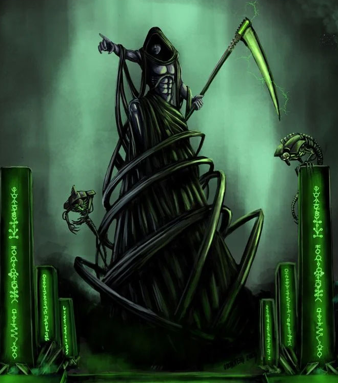

Dossier xenos 950.M41
Les C’Tan ne sont pas des dieux au sens religieux humain. Ils sont plus anciens que la foi, plus anciens que les civilisations, et peut-être plus anciens que certaines étoiles elles-mêmes.
Avant toute interaction avec les Nécrontyrs, ils existaient comme des entités cosmiques. Invisibles, dispersées, se nourrissant de l’énergie stellaire sans conscience apparente telle que nous la comprenons.

ORIGINES ET NATURE
Leur nature changea lorsque les Nécrontyrs les découvrirent et leur offrirent des formes. Des corps faits de nécroderme, capables de contenir leur essence et de leur permettre d’interagir directement avec la matière.
Ce qui suivit dépasse les termes classiques de trahison. Les C’Tan ne guidèrent pas les Nécrontyrs. Ils les consommèrent.
Sous leur influence, les Nécrontyrs subirent la biotransférence. Leurs âmes furent arrachées. Leurs corps devinrent des coquilles mécaniques. Leur espèce fut transformée en armée immortelle, vidée de ce qui la rendait vivante.
Les C’Tan se nourrissaient de cette transformation. Non pas seulement de l’énergie, mais de quelque chose de plus profond. Une essence que l’Imperium ne comprend toujours pas entièrement.
STRUCTURE ET DOCTRINE
Pendant une période, ils régnèrent comme des divinités absolues. Les Nécrons, devenus leurs serviteurs, exécutèrent leur volonté sans pouvoir s’y opposer.
Puis vint la rupture.
Les Nécrons se retournèrent contre leurs maîtres. Non par rébellion émotionnelle, mais par nécessité. Les C’Tan étaient devenus trop puissants, trop incontrôlables.
Ils furent brisés. Non détruits. Fragmentés.
MENACE ACTUELLE
Chaque C’Tan fut divisé en éclats. Des fragments de divinité enfermés, utilisés, manipulés comme des armes.
Mais même brisés, ils restent dangereux. Chaque fragment conserve une part de leur pouvoir. Une capacité à altérer la réalité, à manipuler l’énergie, à déformer les lois physiques.
Les Nécrons utilisent ces fragments avec prudence. Non par respect, mais par crainte. Car ce qui a été brisé peut encore être libéré.
Il serait une erreur de considérer les C’Tan comme des entités mortes. Ils ne sont pas absents. Ils sont contenus.
Et tout ce qui est contenu peut, un jour, cesser de l’être.
Fin de l’extrait. Toute activité liée aux fragments C’Tan doit être traitée comme menace de niveau extrême.